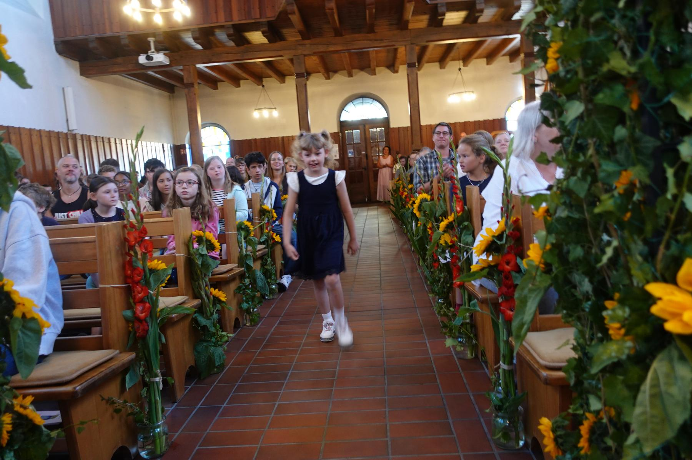
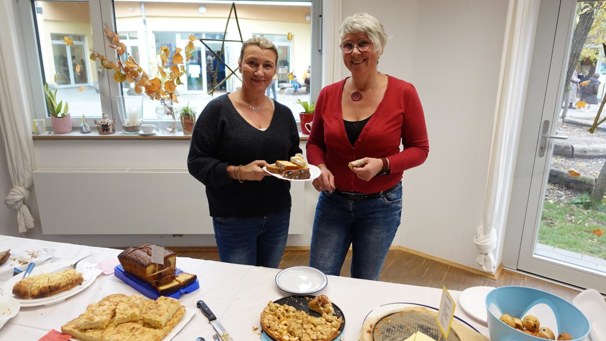
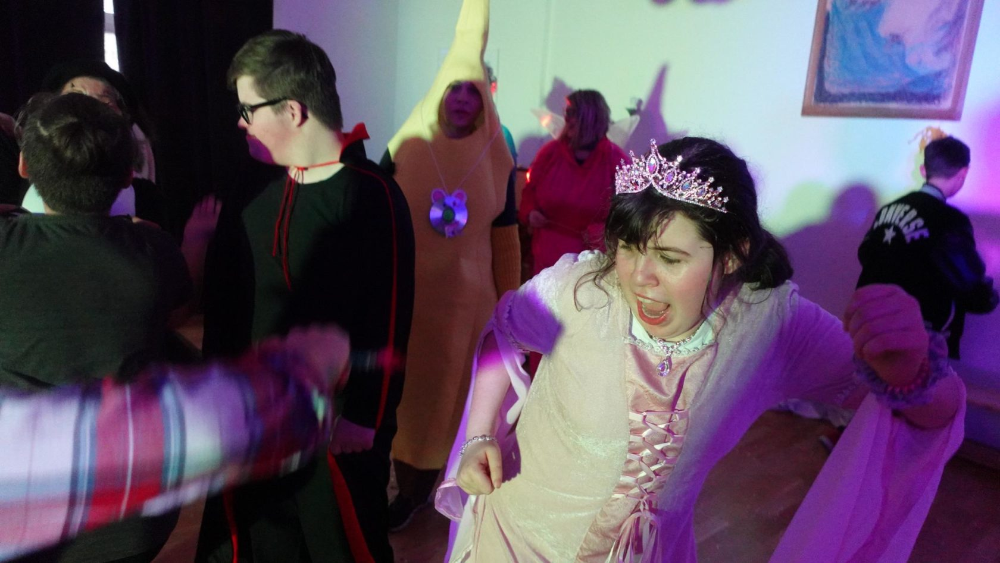
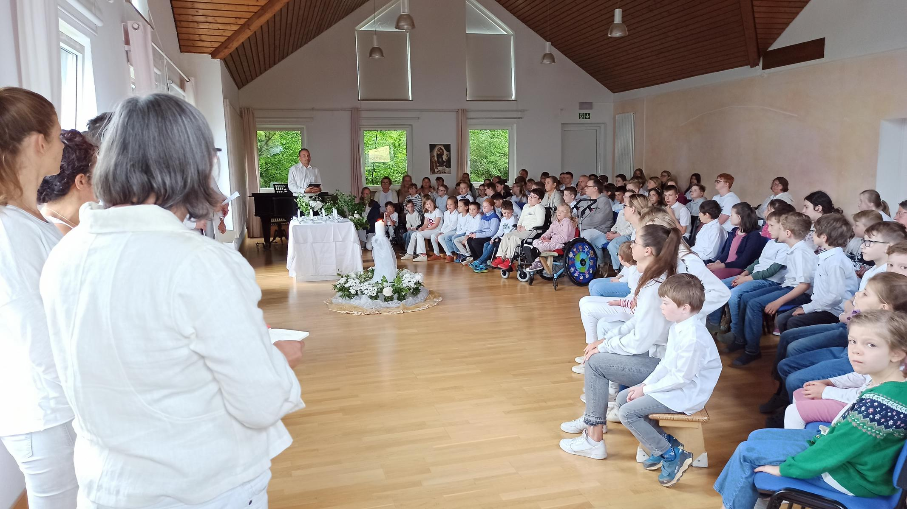
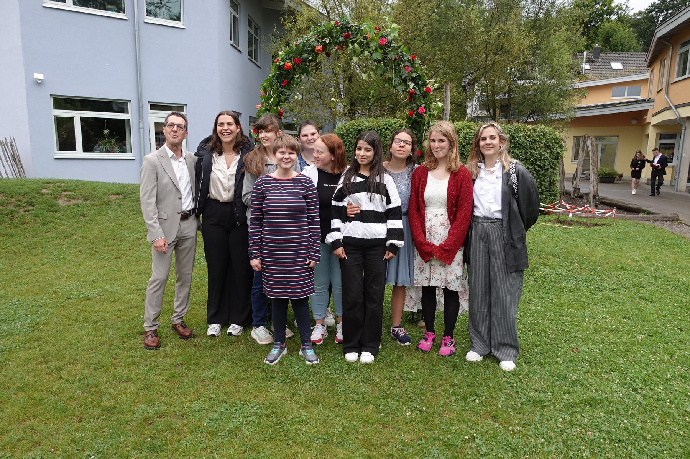
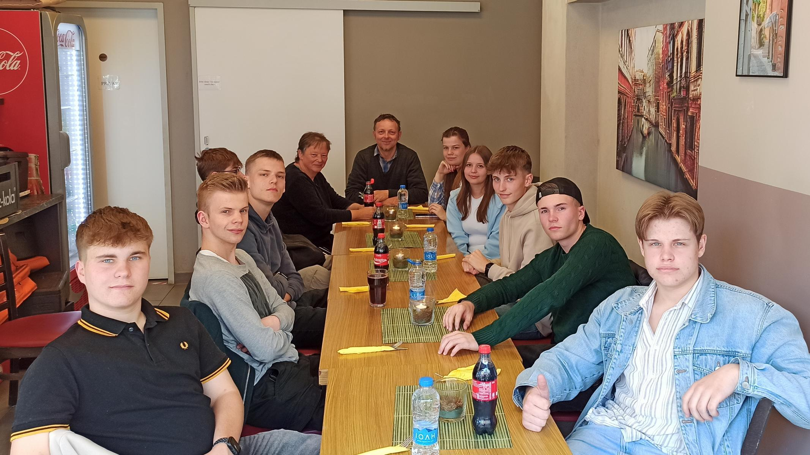

Einschulung
Am Anfang steht ein geschmückter Saal und ein Weg, den jedes Kind allein geht — begleitet von den Blicken der ganzen Schule. Die älteren Schüler:innen nehmen die Neuen in Empfang. Von diesem Tag an gehören sie dazu.
Das Schuljahr bei uns läuft nicht einfach ab — es hat einen Rhythmus. Feste kehren wieder, jedes an seinem Platz im Jahr. Kinder, für die vieles unsicher ist, finden darin etwas, worauf Verlass ist: Im September wird es Michaeli, im Juni brennt das Johannifeuer. Diese Seite zeigt, wie ein Jahr an unserer Schule aussieht.
In der Waldorfpädagogik folgt das Schuljahr dem Lauf der Jahreszeiten. Die Feste sind dabei kein religiöses Programm — sie markieren, wo im Jahr wir gerade stehen. Für viele unserer Schüler:innen sind sie die verlässlichsten Punkte im Kalender: Sie wissen, was kommt, sie haben es schon erlebt, und sie erleben es wieder.
Der Herbst beginnt mit dem Fest des Mutes. Michaeli erzählt vom Erzengel Michael, der den Drachen bezwingt — ein Bild dafür, dass jeder Mensch etwas in sich hat, das ihn erschreckt, und dass man ihm begegnen kann. An diesem Tag stellen sich die Kinder Aufgaben, die Mut verlangen: klettern, balancieren, etwas allein schaffen, das gestern noch zu groß schien.
Für Kinder, die oft die Erfahrung machen, etwas nicht zu können, ist das ein wichtiger Tag. Die Mutprobe ist so gewählt, dass jedes Kind sie besteht.

Einmal im Jahr öffnet die Schule ihre Räume für alle — Familien, Nachbarn, Ehemalige. Es gibt Selbstgemachtes aus den Werkstätten und den Schülerfirmen, Essen, Musik, volle Flure. Der Basar ist der Tag, an dem am deutlichsten sichtbar wird, dass diese Schule eine Gemeinschaft ist und nicht nur ein Gebäude.
Wenn Sie uns außerhalb eines Termins erleben möchten: Hier geht das am unkompliziertesten.
Die Laternen sind in den Wochen davor im Unterricht entstanden, jede einzeln. Am Abend ziehen wir gemeinsam los, singend, durch die früh einsetzende Dunkelheit. Die Geschichte vom geteilten Mantel braucht keine große Erklärung — Kinder verstehen sofort, worum es geht.
Zum Beginn der Adventszeit wird im Saal eine Spirale aus Tannengrün gelegt. Der Raum ist dunkel. Jedes Kind geht die Spirale einmal ab, entzündet in der Mitte sein Licht und stellt es auf dem Rückweg ab. Mit jedem Kind wird es im Raum ein wenig heller.
Es ist eines der stillsten Erlebnisse des Jahres — und erstaunlich oft gerade für die unruhigsten Kinder das eindrücklichste.
Der Nikolaus kommt zu den jüngeren Klassen. Und in den Wochen bis zu den Ferien versammelt sich die Schule regelmäßig zum gemeinsamen Singen — alle Klassen zusammen, quer durch alle Altersstufen.
Zum Jahresbeginn führt das Kollegium für die Schüler:innen ein Spiel auf — ein altes Weihnachtsspiel, das an Waldorfschulen seit Generationen weitergegeben wird. Einmal im Jahr stehen die Erwachsenen auf der Bühne und die Kinder sitzen im Publikum. Diese Umkehrung gefällt allen Beteiligten.

Im Rheinland lässt sich Karneval nicht umgehen, und wir versuchen es auch gar nicht. Verkleidung, Musik, Tanz, Polonaise durch das ganze Haus. Ein Tag, an dem in der Schule ausdrücklich nicht die üblichen Regeln gelten.
Vor Ostern entsteht in der Schule eine Höhle aus Tüchern, Moos und Zweigen. Die Kinder gehen hindurch — hinein ins Dunkle, hinaus ins Helle. Ein einfaches Bild für das, worum es an Ostern geht, ganz ohne Worte.

Ein helles Fest in Weiß. Die Schule schmückt sich, es wird gesungen, und die Klassen zeigen einander, woran sie gearbeitet haben.

Der längste Tag des Jahres, das Fest des Sommers. Blumenkränze, Feuer, Springen, draußen sein. Johanni ist das ausgelassenste Fest im Jahreslauf — der Gegenpol zur stillen Adventsspirale.
Es liegt kurz vor den Sommerferien und beschließt das Schuljahr mit etwas Hellem.

Am Ende des Schuljahres kommt die ganze Schule ein letztes Mal zusammen. Klassen zeigen, was im Jahr entstanden ist. Und die zwölfte Klasse wird verabschiedet — nach bis zu zwölf gemeinsamen Jahren an diesem Ort.
Für viele Familien ist das der Moment, an dem sichtbar wird, welchen Weg ihr Kind hier gegangen ist.
Das Jahr besteht nicht nur aus Feiertagen. Dazwischen liegt der Alltag — und auch der hat seine Höhepunkte: der erste Schultag, die erste Fahrt ohne Eltern, die Arbeit, an der ein Jugendlicher ein ganzes Jahr sitzt.

Am Anfang steht ein geschmückter Saal und ein Weg, den jedes Kind allein geht — begleitet von den Blicken der ganzen Schule. Die älteren Schüler:innen nehmen die Neuen in Empfang. Von diesem Tag an gehören sie dazu.

Mehrere Tage weg von zu Hause — für manche unserer Schüler:innen ist das eine große Sache. Genau deshalb fahren wir. Was auf so einer Fahrt gelingt, wirkt oft noch Monate danach nach.

Am Ende der Oberstufe steht eine eigene künstlerische Arbeit — Theater, Tanz, Musik, Bühnenbild. Ein Jahr Vorbereitung, ein Abend Aufführung. Für viele ist es der Moment, in dem sie sich selbst zum ersten Mal etwas Großes zutrauen.
Die Schülerfirmen unserer Oberstufe — Bistro, Perlenwerkstatt, Wäscherei, Bücherei und Villa Kunterbunt — finden Sie unter Für Ihr Kind
Ein paar Stationen aus der Geschichte unserer Schule — und was die Presse darüber berichtet hat.
downloads/ dieses Projekts kopiert und die Links umgestellt werden. Außerdem zu klären: Gibt es aus 2025 und 2026 neuere Presseberichte? Und in welchem Jahr wurde die Schule gegründet — das wäre eine Angabe, die hierher gehört.
{kind=link}